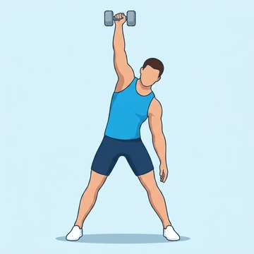
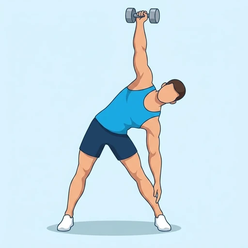

Dumbbell Windmill
This full-body exercise builds core stability, shoulder strength, and hip mobility by rotating the torso while holding a dumbbell overhead, primarily targeting the obliques and lateral deltoids.
Full body · Dumbbell · Intermediate


Muscles worked by the Dumbbell Windmill
Primary
Secondary
Also called: side deltoid, lateral delt, side delt, medial deltoid, lateral deltoid, oblique.
Equipment
Also called: db, dumbell, hex dumbbell, rubber dumbbell, hand weight.
How to do the Dumbbell Windmill
- Stand with feet shoulder-width apart, holding a dumbbell overhead in one hand, arm locked.
- Turn your feet slightly away from the dumbbell side, keeping the arm straight and eyes on the weight.
- Hinge at your hips, pushing them out to the side of the dumbbell, and slowly lower your torso towards the floor.
- Keep your back straight and the dumbbell arm vertical as you reach your free hand towards your foot or the floor.
- Reverse the motion by driving through your hips and obliques to return to the starting position.
- Complete all reps on one side, then switch and repeat for the other side.
Form tips
- Maintain a tight core throughout the movement to protect your spine and enhance stability.
- Keep your eyes fixed on the dumbbell overhead to help maintain balance and a straight arm.
- Focus on hinging at the hips, not rounding your back, to engage the hamstrings and glutes.
- Start with a light weight to master the form before progressing to heavier loads.
At a glance
| Body part | Full body |
|---|---|
| Category | Strength |
| Force type | Pull |
| Mechanic | Compound |
| Difficulty | Intermediate |
| Equipment | Dumbbell |
| Goals | Mobility, Strength |
| Tags | Core focus, Shoulder stability |
| MET | 5.0 (metabolic equivalent, for calorie estimates) |
| Unilateral | Yes |
| Bodyweight | No |
| Dataset id | dumbbell-windmill |
Dumbbell Windmill in German & Spanish
| German | Kurzhantel-Windmühle |
|---|---|
| Spanish | Molino con Mancuerna |
Descriptions, instructions and tips ship in all three languages in the JSON.
Related exercises
Exercise data (JSON)
The record below is exactly what exercises.json ships for this exercise — names, descriptions, instructions and tips in English, German and Spanish.
{
"id": "dumbbell-windmill",
"name_en": "Dumbbell Windmill",
"name_de": "Kurzhantel-Windmühle",
"name_es": "Molino con Mancuerna",
"description_en": "This full-body exercise builds core stability, shoulder strength, and hip mobility by rotating the torso while holding a dumbbell overhead, primarily targeting the obliques and lateral deltoids.",
"description_de": "Diese Ganzkörperübung fördert Rumpf-Stabilität, Schulterkraft und Hüftbeweglichkeit durch Rumpfrotation mit einer Kurzhantel über Kopf, wobei primär die schrägen Bauchmuskeln und seitlichen Deltamuskeln angesprochen werden.",
"description_es": "Este ejercicio de cuerpo completo desarrolla estabilidad del core, fuerza de hombros y movilidad de cadera al rotar el torso con una mancuerna sobre la cabeza, trabajando principalmente los oblicuos y deltoides laterales.",
"category": "strength",
"force_type": "pull",
"mechanic": "compound",
"difficulty": "intermediate",
"equipment": "dumbbell",
"body_part": "full_body",
"primary_muscles": [
"lateral_deltoid",
"obliques"
],
"secondary_muscles": [
"anterior_deltoid",
"gluteus_medius",
"hamstrings"
],
"goals": [
"mobility",
"strength"
],
"tags": [
"core_focus",
"shoulder_stability"
],
"is_unilateral": true,
"is_bodyweight": false,
"instructions_en": [
"Stand with feet shoulder-width apart, holding a dumbbell overhead in one hand, arm locked.",
"Turn your feet slightly away from the dumbbell side, keeping the arm straight and eyes on the weight.",
"Hinge at your hips, pushing them out to the side of the dumbbell, and slowly lower your torso towards the floor.",
"Keep your back straight and the dumbbell arm vertical as you reach your free hand towards your foot or the floor.",
"Reverse the motion by driving through your hips and obliques to return to the starting position.",
"Complete all reps on one side, then switch and repeat for the other side."
],
"instructions_de": [
"Stelle dich schulterbreit hin und halte eine Kurzhantel mit gestrecktem Arm über Kopf.",
"Drehe deine Füße leicht von der Hantel-Seite weg und halte den Arm gestreckt, die Augen auf das Gewicht gerichtet.",
"Beuge dich aus der Hüfte, schiebe sie zur Hantel-Seite heraus und senke deinen Oberkörper langsam zum Boden.",
"Halte deinen Rücken gerade und den Hantel-Arm vertikal, während du mit der freien Hand zum Fuß oder Boden greifst.",
"Kehre die Bewegung um, indem du dich aus den Hüften und schrägen Bauchmuskeln zurück in die Startposition drückst.",
"Führe alle Wiederholungen pro Seite aus, wechsle dann die Seite und wiederhole."
],
"instructions_es": [
"Ponte de pie con los pies al ancho de los hombros, sosteniendo una mancuerna sobre la cabeza con un brazo extendido.",
"Gira tus pies ligeramente alejándolos del lado de la mancuerna, manteniendo el brazo recto y la vista en el peso.",
"Inclínate desde las caderas, empujándolas hacia el lado de la mancuerna, y baja lentamente el torso hacia el suelo.",
"Mantén la espalda recta y el brazo de la mancuerna vertical mientras alcanzas con tu mano libre el pie o el suelo.",
"Invierte el movimiento impulsándote con las caderas y los oblicuos para regresar a la posición inicial.",
"Completa todas las repeticiones por lado, luego cambia y repite para el otro lado."
],
"tips_en": [
"Maintain a tight core throughout the movement to protect your spine and enhance stability.",
"Keep your eyes fixed on the dumbbell overhead to help maintain balance and a straight arm.",
"Focus on hinging at the hips, not rounding your back, to engage the hamstrings and glutes.",
"Start with a light weight to master the form before progressing to heavier loads."
],
"tips_de": [
"Halte den Rumpf während der gesamten Bewegung angespannt, um die Wirbelsäule zu schützen und die Stabilität zu erhöhen.",
"Fixiere deine Augen auf die über Kopf gehaltene Kurzhantel, um das Gleichgewicht und einen geraden Arm zu bewahren.",
"Konzentriere dich auf das Beugen aus der Hüfte, nicht auf das Krümmen des Rückens, um die hintere Oberschenkelmuskulatur und Gesäßmuskeln zu aktivieren.",
"Beginne mit einem leichten Gewicht, um die Form zu meistern, bevor du zu schwereren Lasten übergehst."
],
"tips_es": [
"Mantén el core contraído durante todo el movimiento para proteger tu columna y mejorar la estabilidad.",
"Mantén la vista fija en la mancuerna sobre la cabeza para ayudar a mantener el equilibrio y el brazo recto.",
"Concéntrate en inclinarte desde las caderas, no en redondear la espalda, para activar los isquiotibiales y glúteos.",
"Comienza con un peso ligero para dominar la forma antes de progresar a cargas más pesadas."
],
"met": 5.0,
"images": {
"flat": {
"start": "images/flat/dumbbell-windmill-start.webp",
"peak": "images/flat/dumbbell-windmill-peak.webp"
}
}
}Fetch just this exercise
const { exercises } = await fetch(
"https://exercise-dataset.com/exercises.json"
).then(r => r.json());
const ex = exercises.find(e => e.id === "dumbbell-windmill");Free for personal and commercial in-app use with attribution (“Exercise data by RepDB”) — see the license and ready-made attribution snippets. Redistributing the data as a dataset or API is not permitted.